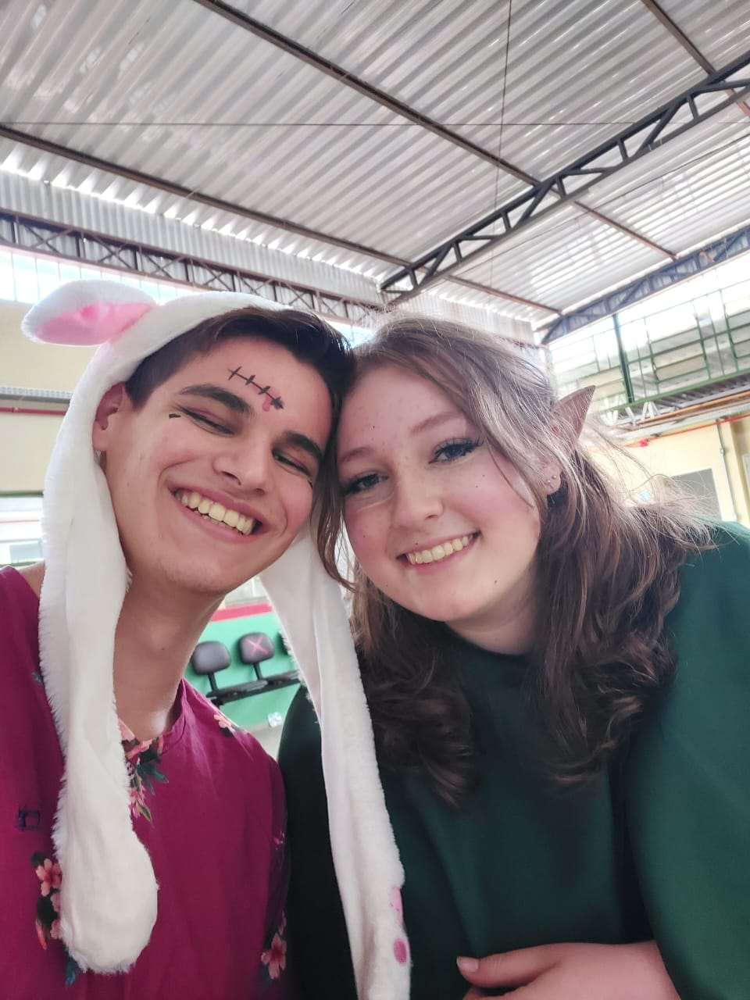

NOME: LUAN RICARDO GABOARDI
Bairro Santa Cruz - Guarapuava
Contato: (49) 98803-9883
Email: luanricardogaboardi@gmail.com

___________________________________________
Objetivo Profissional:
Encarregado de Implantação e Integração de Sistemas ou Desenvolvedor Junior.
Experiência Profissional:
Cabo no 26º Grupo de Artilharia de Campanha (2022)
* Liderança de pessoal para realização de eventos festivos;
* Auxiliar administrativo;
* Auxiliar de depósito;
* Recebimento e cadastramento de notas fiscais.
Auxiliar de administração na empresa Pedro Motores (2020)
* Atendimento ao cliente;
* Auxiliar administrativo;
* Auxiliar de depósito;
* Recebimento e cadastramento de notas fiscais.
Formação Acadêmica:
*Ensino médio completo em E.E.B Zélia Scharf;
*Cursando 3º Período de Engenharia de Software na Universidade Campo Real.
Certificações:
*Conhecimento básico de Linguagem C++;
*Conhecimento básico em Javascript, CSS e HTML;
*Cooperativo/Prestativo
*Nível intermediário no pacote office
*Nível intermediário em Inglês;
*Gestão pessoal;
*Comunicativo;
*Habilidade para trabalhar em equipe.